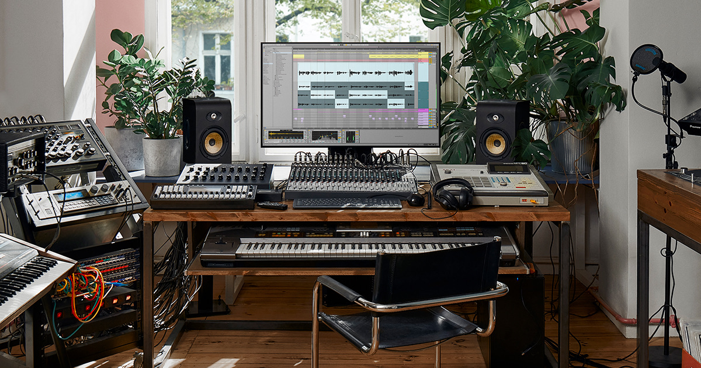

About

I work at the intersection of accessibility, music technology, and practical systems design. My focus is building tools and workflows that are direct, usable, and reliable in real conditions.
That includes accessible music software, teaching, and technical communication, alongside operational experience in robotics and infrastructure inspection. The through-line is clarity: better feedback, better interfaces, and better outcomes for the people using the system.